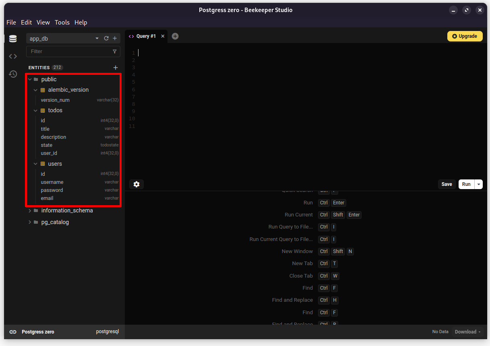

Containerizando nuestra aplicación e introduciendo PostgreSQL
Objetivos de la clase:
- Comprender los conceptos básicos de Docker
- Entender cómo crear una imagen Docker para nuestra aplicación FastAPI
- Aprender a ejecutar la aplicación utilizando Docker
- Introducir el concepto de Docker Compose para el manejo de múltiples contenedores
- Aprender qué es un Dockerfile y su estructura
- Entender los beneficios y motivos del cambio de SQLite a PostgreSQL
En esta clase, además de aprender a containerizar nuestra aplicación FastAPI, también abordaremos la migración de la base de datos SQLite a PostgreSQL.
Contenedores y nuestra aplicación
Siempre que pensemos en distribuir una aplicación, necesitamos garantizar que pueda ser ejecutada de la misma forma en cualquier entorno. Una de las formas más comunes de hacer esto es mediante contenedores.
Un contenedor es un entorno aislado que reúne una aplicación con todo lo que necesita para funcionar, como bibliotecas, dependencias y configuraciones. De esta forma, la aplicación se ejecuta de la misma manera en cualquier computadora o servidor que posea un mecanismo de ejecución de contenedores instalado, independientemente del sistema operativo o de las configuraciones del entorno.
Para crear y gestionar estos contenedores, utilizaremos Docker, una plataforma que permite crear, distribuir y ejecutar aplicaciones en contenedores. Docker automatiza la creación y el manejo de estos entornos, facilitando el desarrollo, las pruebas, la implementación y la compartición de aplicaciones. Esto hace el proceso más consistente, reduce problemas de incompatibilidad entre entornos y simplifica la distribución de software.
En caso de que no tengas Docker instalado en tu máquina
La instalación de Docker varía entre sistemas operativos.
La instalación en Windows varía según la forma en que administras tu sistema. Puede basarse en WSL2 o en Hyper-V.
Los pasos para ambos tipos de instalación pueden encontrarse en la documentación oficial de Docker: link.
La instalación en Linux variará de acuerdo con tu distribución. Las distribuciones más tradicionales (basadas en Debian y RHEL) pueden encontrarse en la documentación oficial de Docker: link.
Otras distribuciones deben tener el paquete de Docker disponible en sus repositorios. Como distros basadas en Archlinux.
La instalación en MacOS dependerá de la arquitectura de tu computadora. Si usas Intel o Silicon.
Los pasos para ambos tipos de instalación pueden encontrarse en la documentación oficial de Docker: link.
Conceptos iniciales
Antes de comenzar, vale la pena entender algunos conceptos importantes sobre cómo funciona la distribución de una aplicación en contenedores. Normalmente seguimos tres etapas:
flowchart LR
A["Descripción del entorno"] -->|build| B["Imagen"]
B -->|run| C["Contenedor en ejecución"]-
Describimos cómo debe construirse el entorno de la aplicación. Esta descripción incluye el sistema operativo base, las dependencias de la aplicación y el comando que deberá ejecutarse cuando ella inicie.
-
A partir de esa descripción, una herramienta de containerización genera una imagen. La imagen es un paquete inmutable que contiene los archivos, dependencias y configuraciones necesarias para crear contenedores.
-
Cuando esa imagen se inicia, da origen a un contenedor. El contenedor es la instancia en ejecución de la imagen, donde la aplicación realmente corre.
Una misma imagen puede ser utilizada para crear varios contenedores independientes entre sí, todos ejecutando exactamente el mismo entorno.
Usaremos Docker para realizar estas etapas. Con él, la descripción del entorno se hace en un archivo llamado Dockerfile, la imagen se construye con el comando docker build y un contenedor se inicia con docker run.
Describiendo la imagen
Para construir una imagen de contenedor, describimos una lista de pasos en el Dockerfile. Él define el entorno de ejecución, los comandos necesarios para prepararlo y el comando que será ejecutado cuando el contenedor sea iniciado a partir de la imagen.
Una de las cosas interesantes sobre Docker es que existe un registro de imágenes donde la comunidad publica imágenes listas para uso, que podemos usar como punto de partida. Por ejemplo, la comunidad de Python mantiene un grupo de imágenes con el entorno Python listo para uso. Podemos partir de esa imagen con Python ya instalado y agregar los pasos para que nuestra aplicación sea ejecutada.
Aquí está un ejemplo de Dockerfile para ejecutar nuestra aplicación:
FROM python:3.14-slim
WORKDIR app/
COPY . .
RUN pip install .
EXPOSE 8000
CMD uvicorn --host 0.0.0.0 fast_zero.app:app
Aquí está lo que hace cada línea:
FROM python:3.14-slim: define la imagen base para nuestro contenedor. Estamos usando la versión slim de la imagen de Python 3.14, que tiene todo lo que necesitamos para ejecutar nuestra aplicación.WORKDIR app/: define el directorio en el que ejecutaremos los comandos a continuación.COPY . .: copia todos los archivos del directorio actual al contenedor.RUN pip install .: instala las dependencias de nuestro proyecto. Solo las deproject.dependencies, sin los grupos de opcionales.EXPOSE 8000: informa a Docker que el contenedor escuchará en el puerto 8000.CMD uvicorn --host 0.0.0.0 fast_zero.app:app: define el comando que será ejecutado cuando el contenedor sea iniciado.
FROM python:3.13-slim
WORKDIR app/
COPY . .
RUN pip install .
EXPOSE 8000
CMD uvicorn --host 0.0.0.0 fast_zero.app:app
Aquí está lo que hace cada línea:
FROM python:3.13-slim: define la imagen base para nuestro contenedor. Estamos usando la versión slim de la imagen de Python 3.13, que tiene todo lo que necesitamos para ejecutar nuestra aplicación.WORKDIR app/: define el directorio en el que ejecutaremos los comandos a continuación.COPY . .: copia todos los archivos del directorio actual al contenedor.RUN pip install .: instala las dependencias de nuestro proyecto. Solo las deproject.dependencies, sin los grupos de opcionales.EXPOSE 8000: informa a Docker que el contenedor escuchará en el puerto 8000.CMD uvicorn --host 0.0.0.0 fast_zero.app:app: define el comando que será ejecutado cuando el contenedor sea iniciado.
FROM python:3.12-slim
WORKDIR app/
COPY . .
RUN pip install .
EXPOSE 8000
CMD uvicorn --host 0.0.0.0 fast_zero.app:app
Aquí está lo que hace cada línea:
FROM python:3.12-slim: define la imagen base para nuestro contenedor. Estamos usando la versión slim de la imagen de Python 3.12, que tiene todo lo que necesitamos para ejecutar nuestra aplicación.WORKDIR app/: define el directorio en el que ejecutaremos los comandos a continuación.COPY . .: copia todos los archivos del directorio actual al contenedor.RUN pip install .: instala las dependencias de nuestro proyecto. Solo las deproject.dependencies, sin los grupos de opcionales.EXPOSE 8000: informa a Docker que el contenedor escuchará en el puerto 8000.CMD uvicorn --host 0.0.0.0 fast_zero.app:app: define el comando que será ejecutado cuando el contenedor sea iniciado.
FROM python:3.11-slim
WORKDIR app/
COPY . .
RUN pip install .
EXPOSE 8000
CMD uvicorn --host 0.0.0.0 fast_zero.app:app
Aquí está lo que hace cada línea:
FROM python:3.11-slim: define la imagen base para nuestro contenedor. Estamos usando la versión slim de la imagen de Python 3.11, que tiene todo lo que necesitamos para ejecutar nuestra aplicación.WORKDIR app/: define el directorio en el que ejecutaremos los comandos a continuación.COPY . .: copia todos los archivos del directorio actual al contenedor.RUN pip install .: instala las dependencias de nuestro proyecto. Solo las deproject.dependencies, sin los grupos de opcionales.EXPOSE 8000: informa a Docker que el contenedor escuchará en el puerto 8000.CMD uvicorn --host 0.0.0.0 fast_zero.app:app: define el comando que será ejecutado cuando el contenedor sea iniciado.
Vamos a entender mejor este último comando:
uvicornes el servidor ASGI que usamos para correr nuestra aplicación.--hostdefine el host que el servidor escuchará. Específicamente,"0.0.0.0"es una dirección IP que permite que el servidor acepte conexiones de cualquier dirección de red disponible, haciéndolo accesible externamente.fast_zero.app:appdefine el<módulo python>:<objeto>que el servidor ejecutará.
¿Y Poetry?
Como la aplicación será ejecutada dentro de un contenedor, ya tenemos un entorno aislado, descartable y reproducible. En ese escenario, no existe la necesidad de crear otro entorno virtual con Poetry. Tampoco necesitamos instalar las dependencias utilizadas durante el desarrollo y las pruebas, sólo las necesarias para ejecutar la aplicación. Por ello utilizamos directamente pip install ., simplificando la escritura del Dockerfile, reduciendo el tiempo de build y produciendo imágenes más pequeñas, con menos dependencias.
Construyendo la imagen
Para construir una imagen de contenedor a partir del Dockerfile, usamos el comando docker build. El siguiente comando crea una imagen llamada "fast_zero":
¿Usas Mac con Silicon?
Puede haber alguna incompatibilidad en alguna biblioteca durante el build, pues no todos los paquetes están disponibles para Silicon en pypi, Arquitectura aarch64.
En caso de encontrar algún problema durante el build puedes especificar la plataforma para amd64:
Este comando lee el Dockerfile en el directorio actual (indicado por el .) y crea una imagen con la tag "fast_zero", (indicada por el -t).
Luego verificaremos si la imagen fue creada con éxito usando el comando:
Este comando lista todas las imágenes Docker disponibles en tu sistema.
Ejecutando el contenedor
Para ejecutar el contenedor, usamos el comando docker run. Especificamos el nombre del contenedor con el flag --name, indicamos la imagen que queremos ejecutar y el tag que queremos usar <nombre_de_la_imagen>:<tag>. El flag -p sirve para mapear el puerto del host al puerto del contenedor <puerto_del_host>:<puerto_del_contenedor>. Por lo tanto, tendremos el siguiente comando:
Este comando iniciará nuestra aplicación en un contenedor Docker, que estará escuchando en el puerto 8000. Para probar si todo está funcionando correctamente, puedes acceder a http://localhost:8000 en un navegador o usar un comando como:
En caso de que te quedes trabado en la terminal
En caso de que tengas la aplicación trabada en la terminal y no puedas salir, puedes teclear Ctrl+C para detener la ejecución del contenedor.
Gestionando contenedores Docker
Cuando trabajas con Docker, es importante saber cómo gestionar los contenedores. Aquí están algunas operaciones básicas para gestionarlos:
-
Correr un contenedor en background: si deseas ejecutar el contenedor en segundo plano para que no ocupe la terminal, puedes usar la opción
-d: -
Detener un contenedor: cuando “detienes” un contenedor, estás esencialmente interrumpiendo la ejecución del proceso principal del contenedor. Esto significa que el contenedor ya no está activo, pero todavía existe en el sistema, con sus datos asociados y configuración. Esto permite que reinicies el contenedor posteriormente, si lo deseas.
-
Remover un contenedor: al “remover” un contenedor, estás eliminando el contenedor del sistema. Esto significa que todos los datos asociados al contenedor son borrados. Una vez que un contenedor es removido, no puedes reiniciarlo; sin embargo, siempre puedes crear un nuevo contenedor a partir de la misma imagen.
Ambos comandos (stop y rm) usan el nombre del contenedor que definimos anteriormente con el flag --name. Es una buena práctica mantener la gestión de tus contenedores, principalmente durante el desarrollo, para evitar un uso excesivo de recursos o conflictos de nombres y puertos.
Introduciendo PostgreSQL
PostgreSQL es un Sistema de Gestión de Bases de Datos Objeto-Relacional (ORDBMS) poderoso y de código abierto. Es ampliamente utilizado en producción en muchos proyectos debido a su robustez, escalabilidad y conjunto de recursos extensos.
Cambiar a una base de datos como PostgreSQL tiene varios beneficios:
- Escalabilidad: SQLite no es ideal para aplicaciones a gran escala o con gran volumen de datos. PostgreSQL fue diseñado para manejar una gran cantidad de datos y peticiones.
- Concurrencia: a diferencia de SQLite, que tiene limitaciones para escrituras simultáneas, PostgreSQL soporta múltiples operaciones simultáneas.
- Funcionalidades avanzadas: PostgreSQL viene con varias extensiones y funcionalidades que SQLite puede no ofrecer.
Además, SQLite tiene algunas limitaciones que pueden volverlo inadecuado para producción en algunos casos. Por ejemplo, no soporta alta concurrencia y puede tener problemas de performance con grandes volúmenes de datos.
Nota
Aunque para el alcance de nuestra aplicación y los objetivos de aprendizaje SQLite podría ser suficiente, siempre es bueno prepararnos para escenarios de producción real. La adopción de PostgreSQL nos da una previa de las prácticas del mundo real y garantiza que nuestra aplicación pueda escalar sin grandes modificaciones de infraestructura.
¿Cómo ejecutar PostgreSQL?
Aunque PostgreSQL es poderoso, su instalación directa en una máquina real puede ser desafiante y puede resultar en configuraciones diferentes entre los entornos de desarrollo. Afortunadamente, podemos utilizar Docker para resolver ese problema. En Docker Hub, están disponibles imágenes preconstruidas de PostgreSQL, permitiéndonos ejecutar PostgreSQL con un único comando. Consulta la imagen oficial de PostgreSQL.
Para ejecutar un contenedor de PostgreSQL, usa el siguiente comando:
docker run -d \
--name app_database \
-e POSTGRES_USER=app_user \
-e POSTGRES_DB=app_db \
-e POSTGRES_PASSWORD=app_password \
-p 5432:5432 \
postgres
Explicando las Flags y Configuraciones
- Flag
-e:
Este flag se usa para definir variables de entorno en el contenedor. En el contexto de PostgreSQL, estas variables son esenciales. Configuran el nombre de usuario, nombre de la base de datos y contraseña durante la primera ejecución del contenedor. Sin ellas, PostgreSQL puede no iniciar de la forma esperada. Es una forma práctica de configurar PostgreSQL sin interactuar manualmente o crear archivos de configuración.
- Puerto
5432:
PostgreSQL, por defecto, escucha conexiones en el puerto 5432. Mapeando este puerto del contenedor al mismo puerto en el host (usando -p), hacemos que PostgreSQL sea accesible en este puerto en la máquina anfitriona, permitiendo que otras aplicaciones se conecten a él.
Sobre las variables
Los valores anteriores (app_user, app_db, y app_password) son valores genéricos para facilitar la inicialización de PostgreSQL en un entorno de desarrollo. Sin embargo, es altamente recomendable que cambies estos valores, especialmente app_password, para garantizar la seguridad de tu base de datos.
Volúmenes y Persistencia de Datos
Para garantizar la persistencia de los datos entre ejecuciones del contenedor, utilizamos volúmenes. Un volumen mapea un directorio del sistema host a un directorio en el contenedor. Esto es crucial para bases de datos, pues sin un volumen, al remover el contenedor, todos los datos almacenados dentro de él se perderían.
En PostgreSQL, el directorio por defecto para almacenamiento de datos es /var/lib/postgresql/. Mapeamos ese directorio a un volumen (en este caso "pgdata") en nuestra máquina host para garantizar la persistencia de los datos:
docker run -d \
--name app_database \
-e POSTGRES_USER=app_user \
-e POSTGRES_DB=app_db \
-e POSTGRES_PASSWORD=app_password \
-v pgdata:/var/lib/postgresql/ \
-p 5432:5432 \
postgres
El parámetro del volumen se pasa al contenedor usando el parámetro -v. De esta forma, los datos de la base continuarán existiendo, incluso si el contenedor es reiniciado o removido.
Agregando el soporte a PostgreSQL en nuestra aplicación
Para que SQLAlchemy soporte PostgreSQL, necesitamos instalar una dependencia llamada psycopg. Este es el adaptador PostgreSQL para Python y es crucial para hacer la comunicación.
Para instalar esa dependencia, utiliza el siguiente comando:
Una de las ventajas de SQLAlchemy como ORM es la flexibilidad. Con solo algunas alteraciones mínimas, como la actualización de la cadena de conexión, podemos fácilmente transicionar a una base de datos diferente. Así, después de ajustar el archivo .env con la cadena de conexión de PostgreSQL, la aplicación deberá operar normalmente, pero esta vez utilizando PostgreSQL.
Para ajustar la conexión con PostgreSQL, modifica tu archivo .env para incluir la siguiente cadena de conexión:
En caso de que hayas alterado las variables de entorno del contenedor
Si alteraste app_user, app_password o app_db al inicializar el contenedor PostgreSQL, garantiza que esos valores se reflejen en la cadena de conexión anterior. La palabra localhost indica que la base de datos PostgreSQL está siendo ejecutada en la misma máquina que tu aplicación. Si la base de datos está en una máquina diferente, sustituye localhost por la dirección IP correspondiente y, si es necesario, ajusta el puerto 5432.
Para que la instalación de psycopg esté en la imagen Docker, necesitamos hacer un nuevo build, para que la nueva versión del pyproject.toml sea copiada y los nuevos paquetes sean instalados:
docker rm fastzeroapp #(1)!
docker build -t "fast_zero" . #(2)!
docker run -it --name fastzeroapp -p 8000:8000 fast_zero:latest #(3)!
- Remueve la versión antigua
- Rehace el build
- Ejecuta nuevamente
Ejecutando las migraciones
Las migraciones son como versiones para tu base de datos, permitiendo que actualices su estructura de forma ordenada y controlada. Siempre que cambiamos de base de datos, o incluso cuando alteramos su estructura, las migraciones necesitan ser ejecutadas para garantizar que la base de datos esté en sincronía con nuestro código.
En el contexto de contenedores, correr las migraciones se vuelve aún más simple. Cuando cambiamos de base de datos, como es el caso de haber salido de un SQLite (por ejemplo) a un PostgreSQL, las migraciones son esenciales. El motivo es simple: la nueva base de datos no tendrá la estructura y los datos de la antigua, a menos que migremos. Las migraciones garantizarán que la nueva base de datos tenga la misma estructura y relaciones que la anterior.
Antes de ejecutar el próximo comando
Asegúrate de que ambos contenedores, tanto de la aplicación como de la base de datos, estén activos. El contenedor de la base de datos debe estar corriendo para que la aplicación pueda conectarse a él.
Asegúrate de que el contenedor de la aplicación esté activo. Estamos usando la flag --network=host para que el contenedor use la red del host. Esto puede ser esencial para evitar problemas de conexión, ya que no podemos prever cómo está configurada la red de la computadora donde este comando será ejecutado.
Para aplicar migraciones en un entorno con contenedores, frecuentemente tenemos comandos específicos asociados al servicio. Veamos cómo ejecutar migraciones usando Docker:
El comando docker exec se usa para invocar un comando específico dentro de un contenedor en ejecución. La opción -it es una combinación de -i (interactivo) y -t (pseudo-TTY), que juntas garantizan un terminal interactivo, permitiendo la comunicación directa con el contenedor.
Después de ejecutar las migraciones, puedes verificar la creación de las tablas utilizando un sistema de gestión de bases de datos. A continuación, presentamos un ejemplo con Beekeeper Studio:

Recuerda: Aunque las tablas estén ahora creadas y estructuradas, la base de datos todavía no contiene los datos anteriormente presentes en SQLite o en cualquier otra base que estuvieras utilizando antes.
Simplificando nuestro flujo con docker-compose
Docker Compose es una herramienta que permite definir y gestionar aplicaciones multi-contenedor con Docker. Es como si tuvieras un director conduciendo una orquesta: el director (o Docker Compose) garantiza que todos los músicos (o contenedores) toquen en armonía. Definimos nuestra aplicación y servicios relacionados, como PostgreSQL, en un archivo compose.yaml y los gestionamos juntos a través de comandos simplificados.
Al adoptar Docker Compose, facilitamos el desarrollo y la ejecución de nuestra aplicación con sus servicios dependientes utilizando un único comando.
Creación del compose.yaml
Explicación línea a línea:
-
services:: define los servicios (contenedores) que serán gestionados. -
fastzero_database:: define nuestro servicio de base de datos PostgreSQL. -
image: postgres: usa la imagen oficial de PostgreSQL. -
volumes:: mapea volúmenes para persistencia de datos. -
pgdata:/var/lib/postgresql/: crea o usa un volumen llamado "pgdata" y lo mapea al directorio/var/lib/postgresql/en el contenedor. -
environment:: define variables de entorno para el servicio. -
fastzero_app:: define el servicio para nuestra aplicación. -
image: fastzero_app: usa la imagen Docker de nuestra aplicación. -
build:: instrucciones para construir la imagen si no está disponible. -
ports:: mapea el puerto 8000 del contenedor al puerto 8000 del host. -
depends_on:: indica que este servicio depende defastzero_database, garantizando que la base de datos se inicie primero. -
environment:: define la variableDATABASE_URLapuntando al servicio de base de datos usando el nombre del servicio como host. -
volumes:: define el volumen nombradopgdataque será usado por el servicio de base de datos.
Ejecutando con Docker Compose
Para subir todos los servicios definidos en el compose.yaml:
Para detenerlos:
Para reconstruir la imagen de la aplicación y subir todo:
Mejoras adicionales en el compose
En versiones más avanzadas del archivo se puede usar env_file y un entrypoint para ejecutar las migraciones automáticamente al iniciar el contenedor de la aplicación.
Ejemplo de mejora:
services:
fastzero_app:
image: fastzero_app
entrypoint: ./entrypoint.sh
build: .
ports:
- "8000:8000"
depends_on:
- fastzero_database
env_file:
- .env
volumes:
pgdata:
Adoptar este enfoque evita la exposición de las variables de entorno en el archivo de configuración. Esta no fue la aproximación por defecto en el curso debido a la complejidad adicional y a la intención de evitar confusiones. Dependiendo del entorno establecido por el equipo de DevOps/SRE en un proyecto real, esta gestión puede variar entre variables de entorno, archivos .env o soluciones más avanzadas como Vault.
Si optas por utilizar un archivo .env con las configuraciones de PostgreSQL, configura Pydantic para ignorar variables de entorno que no son necesarias, agregando extra='ignore' a la llamada de SettingsConfigDict:
| fast_zero/settings.py | |
|---|---|
Con esta configuración, Pydantic ignorará cualquier variable en el .env que no esté explícitamente declarada en la clase Settings, evitando así conflictos y errores inesperados.
Buenas prácticas de inicialización de la base de datos
Como este es un caso pensado para estudio, posiblemente no habrá problemas relacionados con la inicialización. En un entorno de producción, sin embargo, no existe la garantía de que PostgreSQL esté listo para uso en el momento en que el entrypoint sea ejecutado. Sería necesario que, antes de la ejecución de la migración, el contenedor de la base de datos hubiera finalizado la inicialización.
Esto se hace usando el campo healthcheck del compose.yaml:
services:
fastzero_database:
image: postgres
# parte inicial de la configuración ...
healthcheck:
test: ["CMD-SHELL", "pg_isready"]
interval: 5s
timeout: 5s
retries: 10
De esta forma, ejecutará el comando pg_isready cada 5 segundos por 10 veces. pg_isready es una utilidad de PostgreSQL que verifica si ya está operando y listo para recibir conexiones. De esta forma, la inicialización del contenedor solo termina cuando PostgreSQL esté escuchando conexiones.
Commit
Para finalizar, después de crear nuestro archivo Dockerfile y compose.yaml, ejecutar los tests y construir nuestro entorno, podemos hacer el commit de las alteraciones en Git:
- Agregando todos los archivos modificados en esta clase con
git add . - Haz el commit de las alteraciones con
git commit -m "feat(docker): dockeriza aplicación y agrega PostgreSQL" - Envía las alteraciones al repositorio remoto con
git push
Código de esta lección
Conclusión
Dockerizar nuestra aplicación FastAPI, con PostgreSQL, nos permite garantizar consistencia en diferentes entornos. La combinación de Docker y Docker Compose simplifica el proceso de desarrollo e implementación. En la próxima clase, aprenderemos cómo llevar nuestra aplicación al próximo nivel ejecutando los tests de forma remota con la integración continua de GitHub Actions.